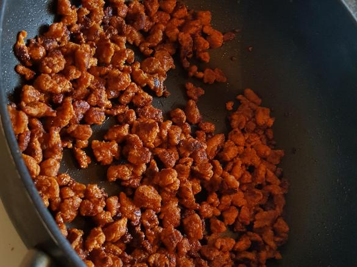

Crumbled Seitan

These seitan crumbles are a meat-free alternative to chorizo or ground hamburger.
This recipe is pretty simple, you really just have to mix the dry ingredients and wet ingredients separately, then add them together and knead until combined. The hardest part is pinching off the crumble pieces themselves, best put on your favorite TV show and take your time.
Ingredients
- 240g Vital Wheat Gluten
- 40g Nutritional Yeast
- Various Herbs and Spices
- 5 tbsp Water
- 1/2cup Apple Cider Vinegar
- 1/4cup Soy Sauce
- 1 tbsp Oil
Steps
- Combine dry ingredients in a large bowl.
- Combine wet ingredients in a small bowl.
- Pour wet ingredients into dry and mix with a pastry slicer.
- Knead by hand until all powder is incorporated.
- Break off small pieces of dough until bottom of pan is covered.
- Cook on medium heat for 7 minutes, stirring occasionally.